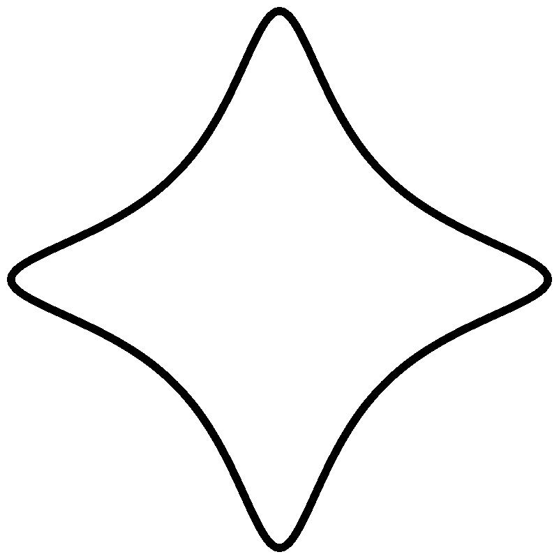

[In answer to: "Is the NSA aware of any weaknesses in the DES or the DSS? The RSA?"] We are unaware of any weaknesses in the DES or the DSS when properly implemented and used for the purposes for which they both are designed. —National Security Agency, June 1992
Earlier this month a new paper by Naomi Benger, Joop van de Pol, Nigel Smart, and Yuval Yarom hit the news. The paper explains how to recover secret keys from OpenSSL's implementation of ECDSA-secp256k1 using timing information from "as little as 200 signatures"; ECDSA-secp256k1 is the signature system used by Bitcoin. The timing information is collected by an attack process running on the same machine, but the process doesn't need any privileges; I don't see any obstacle to running the attack process in a separate virtual machine. Earlier papers by Yarom and Katrina Falkner and Yarom and Benger had explained how to carry out similarly efficient attacks against various implementations of RSA and binary-field ECDSA.
These attacks are what I call "cache-timing attacks": they exploit data flow
For comparison, conventional timing attacks exploit data flow
In both cases the second part of the data flow is built into chips, but the first part is built into the software.
Did the software designers have to allow data flow from secrets to addresses? "Obviously not!" say the theoreticians. "Everybody knows that any computation using branches and random access to data can be efficiently simulated by a computation that accesses only a predefined public sequence of instructions and a predefined public sequence of memory locations. Didn't you take a course in computational complexity theory? If the software designers had done a better job then this attack would never have worked."
I have a different view. I blame this attack on the ECDSA designers. Every natural implementation of ECDSA makes heavy use of secret branches and secret array indices. Eliminating these secrets makes the code much more complicated and much slower. (The theoreticians are blind to these problems: their notion of "efficient" uses an oversimplified cost metric.) The ECDSA designers are practically begging the implementors to create variable-time software, so it's not a surprise that the implementors oblige.
Do elliptic-curve signature systems have to be designed this way? No, they don't. There are other elliptic-curve signature systems that are much easier to implement in constant time.
The broader picture is that elliptic-curve signature systems vary considerably in simplicity, speed, and security. ECDSA does a bad job on all three axes. It's unnecessarily difficult to implement correctly. It's full of unnecessary traps that can compromise security. It's unnecessarily slow no matter how it's implemented, and it's even slower if it's implemented securely. These performance problems encourage implementors to downgrade to breakable security levels, or to disable signatures entirely.
In this blog post I'll review the choices made in designing elliptic-curve signature systems, and explain the consequences of those choices. This blog post turned out to be longer than I was expecting at first, because there are so many different things that ECDSA does wrong.
Thanks to Tanja Lange for help with this blog post.
Yes. A few years ago a team of cryptographers (including me) designed and implemented Ed25519, a state-of-the-art high-security elliptic-curve signature system. Ed25519 fits signatures into 64 bytes; fits public keys into 32 bytes; verifies more than 18000 signatures per second on a three-year-old Intel laptop (2-core 2.1GHz Core i3-2310M); signs even more messages per second; and takes negligible time to generate a new key. These performance results are from software with no data flow from secrets to branch conditions and no data flow from secrets to load/store addresses.
The numbers here come from eBACS, a cryptographic benchmarking site that Lange and I run; specifically, from the signature results for a computer named bridge. The signing and verification benchmarks are for short messages. For very long messages the bottleneck is cryptographic hashing, but of course it's relatively easy for hashing to keep up with the network. All of the benchmarked implementations and benchmarking tools are publicly available, so it's easy for anyone to check the numbers.
RSA provides even faster signature verification than ECC. But RSA has much slower signing, much slower key generation, much larger signatures, and much larger public keys. It's hard to find applications where this is a sensible tradeoff, and it's easy to find applications where RSA's poor performance profile has compromised security. RSA also has many implementation traps, and even a state-of-the-art RSA implementation is more worrisome from a security perspective than ECC is, but that's a topic for another blog post.
Once upon a time I thought that elliptic-curve signature verification was too slow for some verification-intensive applications. The actual story is that typical implementations of ECDSA are too slow for some applications; but, again, ECDSA is very far from a state-of-the-art elliptic-curve signature system.
I have a survey paper that explains what you should do if you're considering RSA signatures. In particular, you should not use the original system proposed by Ron Rivest, Adi Shamir, and Len Adleman; there were many important improvements since then, notably in a followup paper by Michael Rabin. Some of these improvements (such as small exponents, which are critical for fast signature verification) are already included in a typical RSA description, but most of them aren't. Overall today's use of RSA is even farther from the state of the art than today's use of ECC.
The history began with a signature system proposed by Taher ElGamal in 1985, and continued with a much better signature system proposed by Claus Schnorr in 1990. ECDSA was later than Schnorr but is essentially ElGamal's system, ignoring most of Schnorr's improvements. EdDSA and Ed25519 are from 2011 and use Schnorr's improvements, together with some new improvements.
The following description starts with ElGamal signatures and then makes a series of small changes to reach Schnorr signatures. [This classification of changes comes from a talk "The security impact of a new cryptographic library" that Lange and I presented to Qualcomm's security group. The description here is more detailed than our slides.]
The ElGamal signature system: BH(M) = AR RS. ElGamal didn't use elliptic curves; he used multiplication modulo a prime number. Saying that (R,S) is an ElGamal signature of a message M under public key A means that R and S are integers between 0 and p−2 and that BH(M) = AR RS (mod p). Here p is a standard prime number, B is a standard base, and H is a standard hash function. The signer generates A (long term) and R (for this message) as secret random powers of B, and easily solves for S.
Hashing the exponent: BH(M) = AH(R) RS. ElGamal's system still works if the exponent R is replaced by a hash of R. This is cheap (hashing is fast) and is a serious obstacle to any attack strategies that rely on choosing a particular exponent of A.
Prime-order subgroups: BH(M) = AH(R) RS. Same equation, but now S is between 0 and q−1, where q is a prime divisor of p−1, and B has order q. This simplifies the security analysis. This also saves space (for example, 2128 security needs p around 3000 bits but q only around 256 bits), although this savings disappears in the elliptic-curve context.
Elliptic curves: H(M)B = H(R)A + SR. At this point it's also easy to state an elliptic-curve signature system. ECC replaces multiplication mod p with addition on an elliptic curve. A, B, R are now elliptic-curve points, while H(M), H(R), S are integers. I'll continue describing multiplicative systems, but I'll also mention the ECC versions in parallel.
Two exponents: BH(M)/H(R) = A RS/H(R); (H(M)/H(R))B = A + (S/H(R))B. It's safe to assume that nobody will ever generate an H(R) divisible by q, the prime order of the standard base B. The verifier divides the three exponents H(M),H(R),S by H(R) modulo q, obtaining exponents H(M)/H(R),1,S/H(R); the cost of these divisions is outweighed by the speedup in exponentiation. This change can't have lost any security: if BH(M)/H(R) = A RS/H(R) then BH(M) = AH(R) RS, so any forgery against this system would also have been a valid forgery against the system without the change.
Relabel: BH(M)/H(R) = A RS; (H(M)/H(R))B = A + SR. Since the verifier is going to use S/H(R), the signer might as well send S/H(R) rather than sending S, and we can simplify the description by renaming S/H(R) as S. This change can't have lost any security: any forgery (R,S) against this system implies a forgery (R,S H(R)) against the previous system.
Merge the hashes: BH(R,M) = A RS; H(R,M)B = A + SR. Both the signer and the verifier are using H(M)/H(R) as a black-box function of (R,M). There's no reason for the division structure; we can simply hash R and M together, creating an obstacle for any attacks that were relying on the separation between H(M) and H(R).
In particular, imagine that the attacker manages to compute an innocent-looking message M and a dangerous message M' with H(M) = H(M'), and manages to convince the signer to sign M. In the previous system, the attacker has now succeeded at a forgery: the same (R,S) is a valid signature of M'. This doesn't work in the new system: H(R,M) won't be the same as H(R,M'). In other words, this change has made the system resilient to collisions.
Of course, the attacker could have taken a legitimate signature (R,S) of M and tried to find M' with H(R,M) = H(R,M'), but this attack requires "second preimages" of H rather than collisions. The number of targets M is now limited by the number of legitimate signatures performed, whereas previously the number of targets was limited only by the attacker's computation.
Standard practice is to throw away cryptographic hash functions for which collisions have been found (e.g., MD5), or for which collisions can be found by a feasible computation (e.g., SHA-1). If collisions are never found then collision resilience has no obvious benefit. But it's still comforting to have this extra level of protection. Sometimes extra protections have extra costs, raising difficult questions of which protections are most valuable given the user's performance budget, but in this case the extra protection didn't cost anything: in fact, it made the system simpler and faster.
Eliminate divisions: BS = R AH(R,M); SB = R + H(R,M)A. In all of the previous systems, the signer's computation of S involved divisions modulo q. Fast "extended Euclid" divisions are a standard feature of big-number libraries, but these divisions take variable time. "Fermat" divisions are much easier to perform in constant time but require many multiplications mod q, and if those multiplications aren't optimized then one division can easily dominate the time required for signing.
It's normal to simplify and accelerate modular arithmetic by choosing "nice" primes p, such as 2255−19 or 2521−1 for ECC. I'll explain later how to perform fast constant-time multiplications modulo nice primes. But q doesn't naturally end up being a nice prime. The number of points on an elliptic curve mod p is always within 2 sqrt(p) of p+1 by Hasse's theorem, and multiplying modulo this number isn't quite as slow as multiplying modulo a general number, but it's still not fast, especially with the modifications needed to make it run in constant time. One ECC paper proposed taking very special elliptic curves where q=p, allowing reuse of the mod-p functions as mod-q functions, but three groups of researchers quickly showed that taking q=p provides very low security.
Simply juggling where the exponents are placed, and in particular using BS, produces a signature system in which neither the signer nor the verifier performs any divisions modulo q. The signer performs just one reduction modulo q to compute S, so there's no performance problem from using the simplest constant-time reduction methods.
Compress R to H(R,M): H(BS Ah,M) = −h; H(SB+hA,M) = −h. Instead of sending (R,S) as a signature, the signer can send (−H(R,M),S) as a signature. Given (h,S), the verifier (or anyone else) recomputes R as BS Ah, and checks that h = −H(R,M). This change can't have lost any security: a forgery (h,S) here implies a forgery (BS Ah,S) in the previous system.
If H(R,M) is shorter than R then this saves space in signatures. On the other hand, elliptic-curve points are typically sent as 256 bits, and then a 256-bit hash doesn't save any space. Sending R instead of H(R,M) also has the advantage of allowing batch signature verification, which is typically twice as fast as verifying one signature at a time. That's why Ed25519 doesn't use this compression.
Use half-size H output. Given that we don't need collision resistance (see above), do we really need a 256-bit hash? Schnorr proposed using a half-size hash. Together with the previous compression idea this saves 25% of the space in signatures: instead of a 4n-bit signature (2n-bit curve point R and 2n-bit integer S) there's a 3n-bit signature (n-bit hash and 2n-bit integer S).
Schnorr's paper has been cited more than 2000 times, according to Google Scholar, but I'm often amazed at how few people actually seem to have read the paper. For example, twenty years later Greg Neven, Nigel Smart, and Bogdan Warinschi published a paper "Hash function requirements for Schnorr signatures" saying that Schnorr signatures don't need a collision-resistant hash function and can be reduced from 4n bits to 3n bits. As another example, David Naccache and Jacques Stern have a paper (and patent) explaining how to recover n message bits from a 4n-bit signature, reducing the effective signature overhead to 3n bits. As another example, 2n-bit pairing-based "short signatures" are usually claimed to be half the size of Schnorr signatures.
I don't mean to say that I recommend n-bit hashes: in particular, I don't think there has been adequate analysis of their security against multiple-target attacks. Ed25519 goes in the opposite direction, using a 512-bit hash function to "alleviate concerns regarding hash-function security". Remember that Ed25519 sends R rather than H(R,M), so using a longer hash doesn't cost any space: Ed25519 signatures are 64 bytes, independent of the length of the H output.
Hash the public key: BS = R AH(R,A,M); SB = R + H(R,A,M)A. This is an extra modification in Ed25519 that doesn't appear in Schnorr signatures. The idea is to "alleviate concerns that several public keys could be attacked simultaneously": an attacker computing many different hash values now has to commit each hash value to a single public key being attacked.
DSA/ECDSA, a return to the dark ages: BH(M)/S AR/S = R; (H(M)/S)B + (x(R)/S)A = R. DSA is the ElGamal signature scheme with the following three changes: use prime-order subgroups; replace A with A−1; and divide the three exponents by S to obtain two exponents. DSA doesn't hash the R exponent and doesn't replace the division structure with a merged hash of R and M; it isn't resilient to collisions. DSA requires division mod q for the signer, and requires division mod q (or three exponents) for the verifier.
DSA was "invented" by NSA's David Kravitz, according to a patent application filed secretly in July 1991. It was proposed as a standard by NIST the next month. NIST didn't admit NSA's role until after a lawsuit was filed by Computer Professionals for Social Responsibility. NIST memos state that the "reasons for the selection" of DSA are summarized in an NSA document; as far as I know, that document is still classified Top Secret.
NIST received many public objections to DSA. (As NIST put it: "the number of negative comments was significantly larger than normally received for a proposed Federal Information Processing Standard".) For example, here are some of Rivest's comments:
It is my belief that the NIST proposal represents an attempt to install weak cryptography as a national standard, and that NIST is doing so in order to please the NSA and federal law enforcement agencies. ... A U.S. standard, even if weak and flawed, may be widely used overseas, making NSA's job easier.
Technical topics of the objections included DSA's obviously breakable 260 security level (DSA was limited to 512-bit moduli); the lack of an accompanying encryption mechanism; DSA's poor performance; DSA's unnecessary computation of an inverse "each time a message is to be signed"; and DSA's requirement of a cryptographically strong random number for each signature (Rivest wrote "the poor user is given enough rope with which to hang himself"). I'll say more later about the random-number part.
NIST made one change, namely allowing 1024-bit moduli, and then issued DSA as a standard in 1994. Later NIST extended the standard to ECDSA, allowing 15 different elliptic curves that had been chosen by Jerry Solinas at NSA.
There are two different answers to this question: the modern answer used in Ed25519, and the implementation nightmare used in ECDSA.
 Edwards curves. The modern answer is only slightly more difficult than clock addition. Mathematically, the clock is a circle x2+y2=1. Here are some examples of points on the clock:
The sum of two clock points (x1,y1) and (x2,y2) is (x1y2+y1x2,y1y2−x1x2). You can check, for example, that the sum of 2:00 and 5:00 with this formula is 7:00.
"Elliptic curve" is not the same thing as "ellipse", and in particular the circle isn't an elliptic curve, but you can obtain an elliptic curve by slightly deforming a circle. On the right is a graph of x2+y2=1−30x2y2; that's an elliptic curve. More generally, modern ECC uses a complete Edwards curve x2+y2=1+dx2y2 where the curve constant d is a non-square. The sum of (x1,y1) and (x2,y2) on this curve is ((x1y2+y1x2)/(1+dx1x2y1y2),(y1y2−x1x2)/(1−dx1x2y1y2)). The denominators are always nonzero.
Weierstrass curves. ECDSA uses a different shape of elliptic curve, a short Weierstrass curve y2=x3−3x+b. The curve points aren't simply the solutions (x,y) to this equation; there's also another curve point, ∞. The standard addition formulas have six different cases:
This is a mess to implement and test (for example, Watson Ladd pointed out a week ago that RFC 6090, which is coauthored by NSA, gets it wrong in a way that can easily cause security problems), and I don't even want to try to explain how to make it run in constant time. There have been some efforts to merge the first two cases (at the expense of speed), but the merged formulas still have failure cases, and there have been fancy attacks showing how attackers can learn secret information by triggering these failure cases. It's much better to have a single formula that always works.
From the perspective of discrete-logarithm attacks (computing the secret key from the public key), Edwards curves can be viewed as Weierstrass curves, and the standard security analysis (Pollard's rho method, transfers, etc.) works in exactly the same way for both types of elliptic curves. But if you take a broader attack view (does the implementation always work? can the attacker trigger failure cases? is the implementation constant time?) then Edwards curves are much safer than Weierstrass curves. As a bonus, Edwards curves are also considerably faster than Weierstrass curves.
History. Most of the ECDSA flaws that I'm describing in this blog post were already known to be fixable when ECDSA was standardized. The case distinctions for addition are an exception. Before 2007, everyone thought that addition on an elliptic curve needed case distinctions. Here's some of the relevant history:
Curve25519 turned out to be expressible as a complete Edwards curve. This is the curve used in the Ed25519 signature system.
The arithmetic operations used in Curve25519 are additions, subtractions, and multiplications modulo the prime number p=2255−19. Multiplications are the main bottleneck in the computation. Divisions are delayed until the end of the computation (i.e., intermediate results are stored as fractions); the final division a/b is computed as abp−2, and bp−2 is computed as a sequence of slightly more than 255 multiplications. Similar comments apply to Ed25519.
Constant-time Curve25519. Building constant-time software for arithmetic is very much like building unrolled hardware circuits for arithmetic: you allocate a constant number of bits for each integer, and always perform arithmetic on all of the bits. For example, when you add two integers a,b between 0 and 2255, each stored as 255 bits, you always set aside 256 bits for the result a+b. When you multiply two integers a,b between 0 and 2256, you always set aside 512 bits for the result ab.
Between multiplications it's important to reduce the number of bits by subtracting an appropriate multiple of p. Specifically, starting from a big integer c, mask c to obtain the bottom 255 bits r, shift c right by 255 bits to obtain the remaining bits q, and then compute 19q+r; this is the same as c−pq. If c is between (e.g.) 0 and 2600 then 19q+r fits into 350 bits, and a second iteration of the same procedure produces 256 bits. This isn't guaranteed to be between 0 and p−1, but it's small enough for the next multiplication.
At the end of the computation it's not enough to produce a 256-bit integer x: it's important to completely reduce modulo p, producing a result between 0 and p−1. One safe way to do this is with two iterations of a constant-time conditional subtraction. A conditional subtraction replaces x with x−(1−s)p, where s is the (twos-complement) sign bit in x−p. This can be optimized further, but since it's done only at the end of the computation the exact performance doesn't matter.
Constant-time NIST P-256. In principle one can adapt the ideas of the previous three paragraphs to NIST P-256, the usual choice of curve for ECDSA, producing constant-time arithmetic modulo the NIST P-256 prime. The problem is that NIST P-256 has what Adam Langley calls a "nasty prime formation", with many intermediate terms: it's 2256−2224+2192+296−1. This makes every reduction modulo this prime considerably more complicated and considerably slower than reduction modulo a two-term prime.
As I mentioned, the NIST curves were chosen by Jerry Solinas at NSA. Solinas published a paper "Generalized Mersenne numbers" in 1999 claiming that his primes were "particularly well suited for machine implementation". The ECDSA standard also has various comments on the efficiency of these primes. For the NIST P-256 prime, the ECDSA standard specifies the following procedure to reduce modulo p an integer "A less than p2":
How is the implementor supposed to handle "adding or subtracting a few copies"? A loop would take variable time, presumably leaking secret information. A pile of 6 constant-time conditional operations will work correctly (conditional addition of 4p, conditional addition of 2p, conditional addition of p, conditional subtraction of 4p, conditional subtraction of 2p, conditional subtraction of p) but is also quite slow. An implementor who removes these steps, delaying complete reduction until the end of the computation, then has to handle products that are not "less than p2", and the standard doesn't give any hint of how to adapt its reduction procedure to handle such inputs.
Radix flexibility. The standard NIST P-256 reduction procedure becomes even more painful if integers aren't represented in radix 232 (or 216 or 28): the word shuffling required for T,S1,S2,S3,S4,D1,D2,D3,D4 then turns into a long sequence of bit manipulations. The reason this is important is that radix 232 isn't the best way to carry out big-integer arithmetic on most CPUs. Even on CPUs where the largest multiplier size is exactly 32 bits, it's almost always better to use a radix smaller than 232, so that carries can be delayed.
For comparison, the prime 2255−19 is friendly to radix 232 (simply reduce modulo 2256−38) but is also friendly to many other choices of radix. Curve25519 is a frequent topic of ECC-optimization papers (not just my own papers!), and those papers have used many different choices of radix to take advantage of different multipliers on different platforms:
A simple 32-bit implementation of Curve25519 (or Ed25519) is already considerably faster than NIST P-256 (or ECDSA using NIST P-256), and tuning the radix provides an extra speed boost, thanks to the simple shape of 2255−19.
Other standard primes. To be fair I should mention that there's one standard NIST curve using a nice prime, namely 2521−1; but the sheer size of this prime makes it much slower than NIST P-256. The other NIST primes are 2192−264−1 (substandard security level), 2224−296+1, and 2384−2128−296+232−1. The secp256k1 (Bitcoin) prime is 2256−232−977. The French (ANSSI FRP256v1) and German (Brainpool) standard primes have many more terms and are much slower.
One central source of curve specifications is safecurves.cr.yp.to. This is an ECC security-evaluation site that Lange and I run, covering 20 different curves so far. That site doesn't evaluate performance, but many curves are included in the central eBACS benchmarking site that I mentioned earlier.
Signing starts by generating a secret random integer k and then computing R = kB. I'll discuss the randomization later. The main bottleneck in signing is the computation of kB from k, a "fixed-base-point scalar multiplication".
One easy way to compute kB is to split k into (say) 4-bit pieces. For example, k has 256 bits in Ed25519, so it can be written as k0 + 24 k1 + 28 k2 + 212 k3 + ... + 2252 k63 where each ki is in {0,1,2,...,15}. Then kB is the sum of 64 points, namely k0 B, 24 k1 B, 28 k2 B, 212 k3 B, ..., 2252 k63 B. The term k0 B is looked up in a table containing the 16 points 0B,1B,2B,...,15B; the term 24 k1 B is looked up in a table containing the 16 points 24 0B,24 1B,24 2B,...,24 15B; same for all the other terms. There are many possible tradeoffs between the total table size and the number of additions, and there are slightly more complicated methods that improve the tradeoffs.
Wait a minute: for security we have to avoid secret array indices. So how do we look up k0 B in a table? The index k0 is secret!
What the Ed25519 software actually does is read all of the table entries and perform arithmetic to extract the correct table entry. The basic idea is simple (and fundamentally the same as what RAM hardware does): if b is a bit then x[b] is the same as x[0]+b(x[0]−x[1]). You can replace the addition, multiplication, and subtraction here with XOR, AND, and XOR respectively. (On some processors there are "conditional move"/"select" instructions that perform the same computation, although you have to be careful to check whether those instructions actually take constant time.) If b and c are bits then x[2*c+b] is the same as y[0]+c(y[0]−y[1]), where y[0] is x[0]+b(x[0]−x[1]) and y[1] is x[2]+b(x[2]−x[3]).
Scalar multiplication for ECDSA. This method of computing kB in constant time might seem quite general and trivially applicable to ECDSA. The big problem is that ∞ is an exceptional case for the Weierstrass addition formulas, and the point 0B appearing in each table is exactly ∞.
There are several ways to work around this problem without huge extra performance penalties. For example, one can change the range of each ki to exclude 0, although expanding k as a sum of ki then requires some thought. As another example, one can use arithmetic to replace P+0 with P in the case that ki is 0, so that a bogus computation of P+0 doesn't cause problems, although handling the possibility of an initial 0 then requires some thought.
The ANSI X9.62 ECDSA standard doesn't consider these issues. (The NIST ECDSA standard also doesn't consider these issues: it simply specifies the NSA choices of elliptic curves and cites ANSI X9.62 for the remaining details of ECDSA.) The standard instead states a scalar-multiplication method commonly known as "NAF"; this method doesn't involve any additions of 0 but doesn't take constant time. The OpenSSL software broken by Benger, van de Pol, Smart, and Yarom uses a faster scalar-multiplication method commonly known as "wNAF", which also doesn't take constant time.
I haven't actually bought a copy of the X9.62 standard; I'm looking at Appendix D.3.2 in a free online draft of the standard. Maybe the standard was changed after this draft, but back then people weren't really paying attention to timing attacks, so I would be surprised if the final standard explains a constant-time scalar-multiplication algorithm, while it's completely unsurprising to see that the OpenSSL ECDSA implementation uses a non-constant-time scalar-multiplication algorithm.
It's of course possible that a constant-time scalar-multiplication algorithm will appear in a future ECDSA standard. But this will be yet another way that ECDSA is more complicated, and slower, than a properly designed elliptic-curve signature system.
ElGamal's signing procedure required the signer to choose a uniform random R independently for each message, by choosing the discrete logarithm k of R as a uniform random secret integer modulo q. ElGamal pointed out that a sufficiently severe screwup, such as publishing k or using the same k for two messages, would reveal the signer's long-term secret key. This is exactly how the Sony PlayStation 3 ECDSA signing key was discovered in 2010.
Often k is called a "nonce"; a nonce, by definition, is a number used once. However, this understates the security requirements for k. Followup papers showed that less severe deviations from randomness, such as always choosing the top 4 bits of k to be 0 or merely revealing the top 4 bits of each k, would also reveal the signer's secret key. Recent papers on these attack techniques include De Mulder–Hutter–Marson–Pearson and the new Benger–van de Pol–Smart–Yarom paper.
The costs of RNGs. An appendix to the 1994 DSA standard specified a typical RNG for generating k, starting by hashing a "secret initial value" and then updating this initial value for the next k. This is not a bad simulation of true randomness, but it begs the question of where the "secret initial value" comes from. It's also stateful: the RNG state must be updated for each signature. Multiple signers can't simply clone a single state. One has to be careful with crashes, VM rewinding, etc.
Fortunately, the costs of getting an RNG right can be shared across applications. It's safe to have a single centralized RNG in an operating system (or, even better, a hypervisor) providing random numbers to all applications; if the RNG is secure then the outputs are indistinguishable from the outputs of separate application-specific secure RNGs. We need at least one secure RNG in any case to generate long-term secret keys, so we can reuse that RNG to generate k.
Avoiding RNGs in signatures. It would be better if the signature system didn't need new randomness for each signature in the first place. The RNG would be used much less frequently, and could afford to be designed more conservatively. We wouldn't have to worry about the RNG taking entropy from malicious sources. We could move a long-term secret key into a highly protected hardware device for signing, without having to pay for an RNG in the hardware device and without having to worry about the quality of that RNG. We could have test vectors for signing functions, because those functions wouldn't have a hidden RNG input.
This is exactly what was accomplished by a very simple modification to DSA suggested by George Barwood in February 1997: namely, "a prng is used to generate k, keyed with d (the private key), and seeded with e (the message digest)." Essentially the same idea was suggested by John Wigley in March 1997: "Why not derive the random number from the message to be signed therefore removing the need for a hardware rng (smartcards) or a complex and potentially fallible software attempt. ... 1)Hash the message to be signed as usual and use that as the message in the signature algorithm. 2)hash the private key using the chaining variable state left by the previous hash, and use that as the random number."
The same idea was reinvented by M'Raïhi, Naccache, Pointcheval, and Vaudenay, who managed to stretch it out into a multiple-page conference paper. Naccache, M'Raïhi, and Levy-dit-Vehel had actually filed a patent application on the idea in May 1997; they abandoned the patent application in 2003. The idea was yet again reinvented by Katz and Wang and published as part of a 2003 paper, although the main point of that paper was something else so the idea wasn't stretched out.
Maximum security. Ed25519 actually generates k by hashing the secret key together with the entire message. Very fast "PRFs" used to authenticate messages, such as VMAC, are safe here, but Ed25519 simply uses SHA-512 since it's quite rare for this to be a noticeable bottleneck. Using an RNG wouldn't break interoperability, but the safest option is the default. Using Ed25519 to sign H(m), rather than m, would mean hashing m only once (at the expense of collision resilience), but again the safest option is the default.
Ed25519 has two secret keys, one used for the hashing to produce k and one used as the discrete logarithm of the public key, to prevent any weird interactions between the hashing and the rest of the signature system. Both of these keys are actually derived from a single 256-bit master secret key, but if the key-derivation function is secure then this is indistinguishable from having two independent secret keys. This derivation also means that quite severe deviations from randomness in the master secret key, such as having the first 64 bits all zero, still won't allow any easy attacks.
More possibilities for the hash input. I've heard many stories from DSA/ECDSA implementors who generate k as a hash of various inputs. All of the inputs I've heard about fall into four categories:
It's important for k to be unguessable. M and N are guessable, so it's critical to use at least one of P, X. There's an easy argument that using X is sufficient here: if X were guessable then the whole system would be broken no matter how k is generated. Note that the same argument doesn't apply to P.
It's also important for k to be different for each message. X doesn't vary from one message to another, so it's critical to use at least one of P, N, M. Using M is obviously sufficient here. Using N is also obviously sufficient. Using P might be sufficient but requires a serious PRNG audit.
It's also helpful for signing to be stateless. This means that it's bad to use N or P.
All of these criteria are satisfied by simply hashing (X,M), as Barwood and Wigley proposed. (P,X,M), (X,N,M), and (P,X,N,M) lose statelessness, and I have no idea why they're supposed to be better than (X,M). There's a very small speed argument for omitting M in favor of N, producing (X,N) or (P,X,N), but these lose statelessness and are certainly more difficult to get right. I'm not aware of any argument for omitting X.